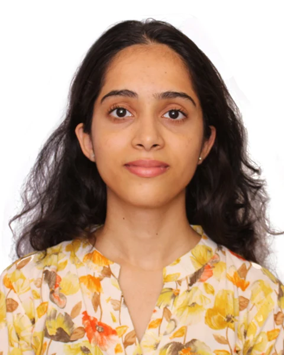

OPEN TO FULL-TIME ROLES · MAY 2027BROOKLYN, NY / 40.69° N
MECHANICAL ROOTS. ROBOTIC THINKING.
I build machines.
And the intelligence
that moves them.
I’m Grishma, a mechanical engineer at NYU connecting mechanisms, embedded systems, and simulation to make robots work in the physical world.

Grishma BalgiM.S. Mechatronics & Robotics, NYU
Mechanical Engineering, VJTI
INTERACTIVE WORKBENCHSYS / 01
The system comes together.
Mechanisms → sensing → control → motion
Press Strike & record
Drag to orbit · Scroll to zoom · Illustrative robot mechanism
WHAT ARE YOU HIRING FOR?
Choose a lens. Explore the same engineer.
NYU Graduate researchVJTI Mechanical engineeringSchneider Electric Engineering internship · 2024–2025Meet the engineer ↗
01 / SELECTED WORK
Built. Programmed.
Put to the test.
From competition vehicles to soft robots: hardware, software, and the space between.
ALL SYSTEMS
No projects match that search. Try Python, STM32, or SolidWorks.
02 / HOW I ENGINEER
The robot is only
as good as
its connections.
Design the mechanism
Geometry, materials, loads, and how it gets built.
Make it measurable
Sensors, acquisition, and experiments that reveal behavior.
Close the loop
Firmware, models, and control connecting intent to motion.
GRISHMA BALGIENGINEER / BUILDER / RESEARCHER
03 / THE ENGINEER BEHIND THE SYSTEM
Curiosity, with
a physical output.
My starting point is always the physical system: how it moves, what we can measure, and how to make it work.
I’m pursuing an M.S. in Mechatronics & Robotics at NYU. At Prema Lab, I work on instrumented robotic-fin experiments and soft-tentacle modeling. Before that, mechanical engineering at VJTI and a year-long Schneider Electric internship brought me into vehicle systems, fabrication, and digital-twin development.
2025—2027
New York UniversityM.S. Mechatronics & Robotics · Expected May 2027
2024—2025
Schneider ElectricEngineering internship · Modeling & sensor analysis
2021—2025
VJTI, MumbaiB.Tech. Mechanical Engineering · Honors in Automobile Engineering
LET’S BUILD SOMETHING THAT MOVES.
Your next system.
My next challenge.
Mechanical design, embedded systems, robotics, and simulation.
Full-time availability from May 2027.
CONVERSATION↗grishmabalgi@nyu.edu ↗